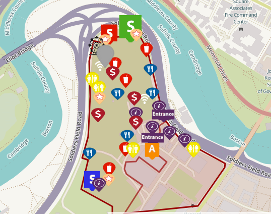

Boston Calling
I created a map of the second-year of Boston Calling, a Boston-based musical festival, showing
the location, attractions, and stages and, the improvements made from last year.
Using Leaflet.js,
I created a map of the location of the music festival, Boston Calling, and showing where attractions,
utilities, and booths will be located this year. Furthermore, my goal for this project is to visualize
how this festival has made improvements for its second year.
Story: Too many choices at Boston Calling? Here’s some help.
Role: Data Designer and Developer
Tools: HTML, CSS, Leaflet.js